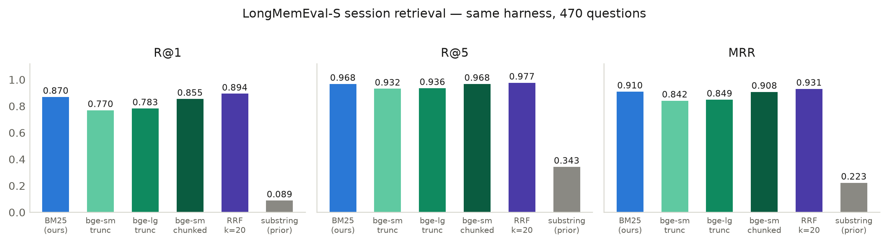
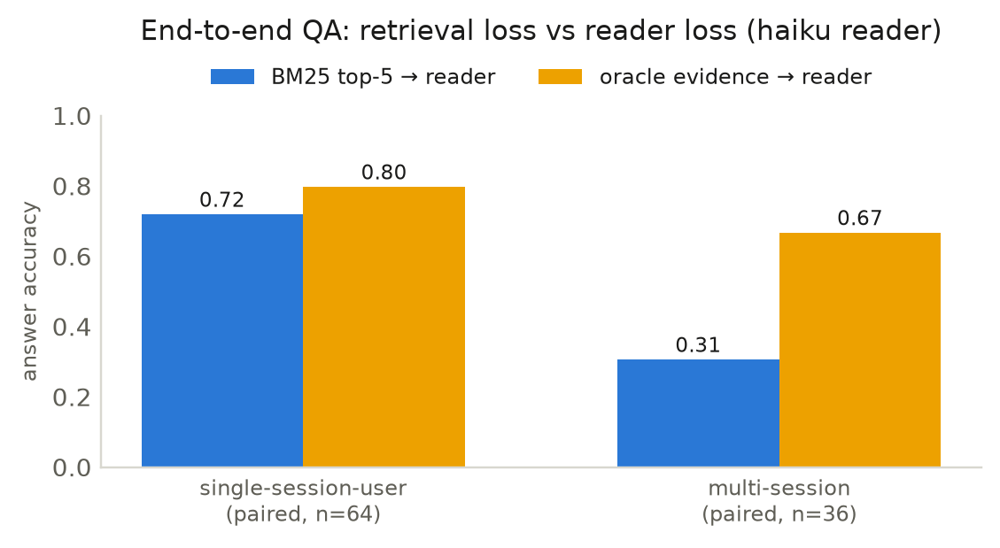
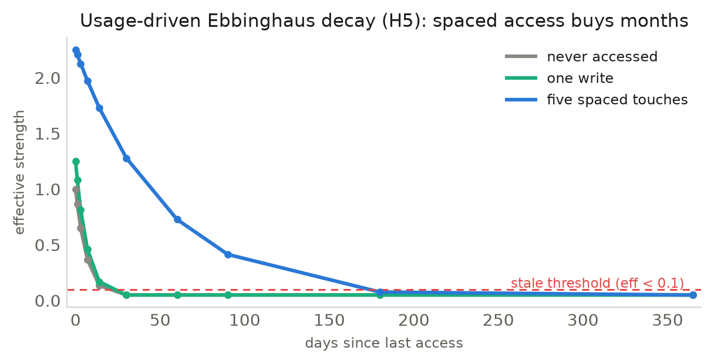
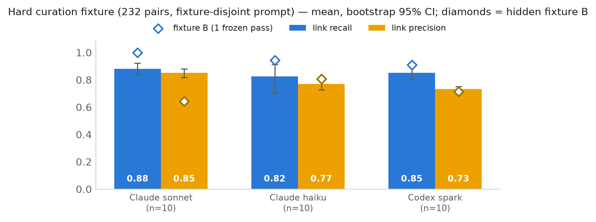
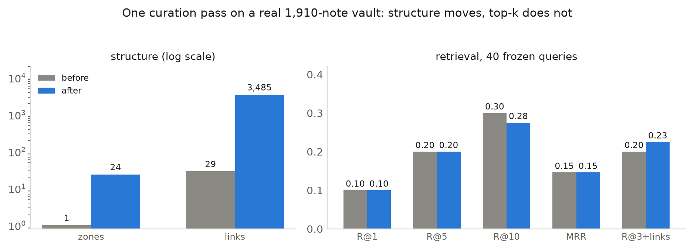

Abstract. Memory for LLM agents increasingly means infrastructure — embedding models, vector databases, graph servers, an LLM call on every write. We ask how much a personal agent (one user, one machine, thousands of notes) actually needs, and make two claims. First, a transparent lexical substrate is enough for personal-scale retrieval on the long-term-memory benchmark we test. Birkin-Mnemosyne is built from the Python standard library alone: Markdown notes in zone directories, Okapi BM25 over a stat-fingerprinted inverted index, and a usage-driven Ebbinghaus decay wired into the ranking. On LongMemEval-S session retrieval it reaches Recall@5 0.968 / MRR 0.91 (near-identical on the cleaned and original splits), beating same-harness truncated dense retrievers at two encoder sizes (bge-small 0.932/0.842; bge-large 0.936/0.849), tying a chunked one (0.968/0.908), and conceding only 0.009 R@5 / 0.021 MRR to the best tuned hybrid we measured (0.977/0.931) — a margin that a dev-tuned, arithmetic-only stack (query-side idf weighting, user-turn field weighting, a relative-date prior; every ingredient classic IR) then buys back: 0.900/0.977/0.933, parity with the hybrid, still with no encoder at all. An end-to-end check with a fixed cheap reader answers 53.8% of questions (abstention accuracy 0.80); an oracle-evidence control decomposes the residual into reader-bound loss on single-evidence questions and retrieval-bound loss on multi-session ones. Second, CurationPlan/1 makes agentic memory curation safe and provider-portable by construction: the model emits only a typed JSON reorganization plan, and a deterministic executor validates, clamps, and applies it under file-safety invariants enforced in code. The same nightly curation runs across the Claude and Codex CLIs (with adapters for API, Gemini, and local back-ends), and no output arriving through this interface — however weak or adversarial — can delete a note, mass-archive the vault, escape it, or archive a protected note (a model with other tool access is outside this threat model). On a hard 232-pair curation benchmark scored with a fixture-disjoint prompt over ten passes per engine, Claude sonnet leads (link precision 0.851 [0.816–0.881] at recall 0.881) with haiku and Codex competent but noisier — yet a hidden second fixture evaluated once shows the engine ordering does not transfer across fixtures, while the safety invariants hold for every pass from every engine. On a real 1,910-note vault, one curation pass reorganizes structure dramatically (1 → 23 project zones, 29 → 3,485 links) while leaving frozen-query top-k retrieval essentially unchanged — curation is an organizational win, not a reranking win. The transferable idea is a mechanical/judgment split applied over and over: let arithmetic do what arithmetic can, enforce safety in code, and spend the model only where judgment is genuinely required.
국문 초록. LLM 에이전트에 장기 기억을 부여하는 일은 갈수록 무거운 인프라를 쌓는 일이 되어 간다 — 임베딩 모델, 벡터 데이터베이스, 그래프 서버, 그리고 노트를 저장할 때마다 발생하는 LLM 호출까지. 본 논문은 사용자 한 명, 기계 한 대, 노트 수천 장 규모의 개인 에이전트에 그 스택이 정말로 필요한지를 묻고, 두 가지 주장으로 답한다. 첫째, 개인 규모의 검색에는 투명한 어휘 기반 기층으로 충분하다. Birkin-Mnemosyne는 파이썬 표준 라이브러리만으로 구현되었으며 — 구역(zone) 디렉터리의 마크다운 노트, 한글 바이그램 토크나이저를 갖춘 BM25 역색인, 간격을 둔 접근이 안정성을 키우는 에빙하우스 감쇠를 랭킹에 직접 결합 — LongMemEval-S 세션 검색에서 Recall@5 0.968, MRR 0.91을 달성하여 같은 하네스의 절단(truncated) 밀집 임베딩 검색기 두 크기(bge-small, bge-large)를 모두 앞서고, 청크 임베딩과는 동률이며(0.968/0.908), 가장 강한 튜닝 하이브리드(0.977/0.931)에도 R@5 0.009·MRR 0.021만을 내준다 — 그리고 이 격차는 dev 절반에서만 튜닝한 순수 산술 스택(질의어 idf 가중, 사용자 발화 필드 가중, 상대날짜 사전확률 — 모두 고전 IR 기법)이 도로 회수한다: 0.900/0.977/0.933, 인코더 없이 하이브리드와 대등. 둘째, CurationPlan/1은 에이전트 기반 기억 큐레이션을 구조적으로 안전하고 프로바이더 간 이식 가능하게 만든다: 모델은 typed JSON 계획만 출력하고 결정적 executor가 코드로 강제되는 파일 안전 불변식 아래 검증·제한·적용하므로, 이 인터페이스를 거치는 한 아무리 약하거나 적대적인 모델 출력이라도 노트 삭제·대량 아카이브·vault 이탈·보호 노트 아카이브를 일으킬 수 없다(다른 도구 접근 권한을 가진 모델은 이 위협 모델의 범위 밖이다). 엔진당 열 번씩 채점한 232쌍 하드 벤치마크에서 Claude sonnet이 앞섰지만(링크 정밀도 0.851, 재현율 0.881), 단 한 번만 평가한 비공개 두 번째 fixture에서는 엔진 간 순위가 유지되지 않았다. 실제 1,910개 노트 vault에서는 큐레이션 한 번이 구조를 극적으로 재편하면서도(1→23개 프로젝트 구역, 링크 29→3,485개) 동결 쿼리의 top-k 검색은 사실상 그대로였다 — 큐레이션의 가치는 재랭킹이 아니라 조직화에 있다. 관통하는 아이디어는 기계/판단의 반복적 분리다: 산술로 되는 일은 산술에, 안전은 코드에, 모델은 판단이 진정으로 필요한 곳에만.
The memory question for LLM agents is usually answered with more machinery. MemGPT [2] pages context like an operating system; Mem0 [5] extracts facts with LLM calls at write time into vector and graph stores; Zep [9] serves a bi-temporal knowledge graph; HippoRAG [6] runs Personalized PageRank over an LLM-built graph. These target products with many users and heavy query volume. A personal agent — the setting of the Birkin project — has a different profile: one user, a vault that grows by tens of notes a day, a single machine, and a hard requirement that the user can open their memory in a text editor and understand it.
Three observations shape the design. (1) Most memory operations do not
need a model. Placing a note, indexing it, ranking by lexical relevance,
tracking what gets used — these are mechanical. What needs judgment is
sparse and batchable: which links are real, which notes are misfiled, what has
gone stale. A-MEM’s ablations [1] show link generation and memory
evolution are the components that matter; A-MEM performs those judgments
online at write time, and we test whether they can instead be batched offline,
off the hot path. (2) Forgetting is a ranking signal, not a delete
button. MemoryBank [4] applies Ebbinghaus-style forgetting to an embedding
store; rational analysis of human memory [17] says retrieval should track
need probability — frequency, recency, spacing. We wire exactly
that into the score. (3) Spatial organization is cheap and humans already
use it. The method of loci is the one technique memory champions reliably
share [18]. Zone directories give the same affordance to the user (folders in
Obsidian) and the agent (a priority prior over places), at the cost of
mkdir.
Contributions (in order of claimed importance). (i) CurationPlan/1, a provider-portable, safe-by-construction curation interface: the model proposes a typed JSON plan; a deterministic executor validates, clamps, and applies it under file-safety invariants enforced in code (§3.3, Fig. 2). No model can violate those invariants; what the interface cannot prevent is a bad-but-valid curation (a mis-merge, a wrong link) — a model-accuracy question (§5.4) cleanly separated from safety (§5.3). (ii) A zero-dependency lexical memory substrate — files in zones, a stat-refreshed inverted index, BM25 with a Hangul-bigram tokenizer, usage-driven decay, zone priority — that beats same-harness dense retrievers on a public long-term-memory benchmark (§5.1) while staying greppable and diffable. (iii) Decay and zone priority wired into ranking, with a 2×2 ablation isolating each signal (§5.2). (iv) An open, reproducible artifact: a single-module retrieval engine, a curation executor and provider registry, 127 subsystem unit tests, and a deterministic benchmark harness.
Positioning (what we do not claim). We do not claim the first memory-palace metaphor, the first local-first or file-based agent memory, the first Ebbinghaus-style forgetting, or the discovery that BM25 is a strong retriever — each has clear prior art (§2). To our knowledge the specific combination is what is new: a stdlib-only lexical substrate paired with a provider-agnostic, plan-only curation interface whose file safety is enforced by a deterministic executor. The load-bearing empirical claims are (a) this zero-dependency substrate reaches a competitive session-retrieval band with no embedding stack, and (b) moving safety from prompt-compliance into a clamping executor makes curation safe by construction across engines.
Agent memory systems. MemGPT [2, R3] treats the context window as main memory with paging; Mem0 [5, R6] extracts and consolidates facts with write-time LLM calls over vector (optionally graph) storage; A-MEM [1] builds Zettelkasten-style notes whose links the LLM judges over embedding-retrieved candidates. MemoryBank [4] introduced Ebbinghaus-inspired forgetting; SCM [10] fronts a memory stream with a controller; ReadAgent [11] compresses documents into gists; HippoRAG [6] and Zep/Graphiti [9, R4] sit at the knowledge-graph end. Surveys [15] taxonomize the space; at the practitioner end sit memory SDKs (LangMem [R5], Cognee [R7], MemPalace [R1]) and self-curating agent skeletons (Hermes-Agent [R2], whose curator lifecycle Birkin’s skill aging follows). Against all of these, our distinguishing choices are (a) no embedding model, no vector store, no server — files plus a JSON sidecar index — and (b) LLM involvement only in a nightly batch, mediated by a deterministic safety layer.
The 2026 local-first wave — and where we differ. We are not first to move agent memory onto local, human-readable files. ByteRover [21] is closest: markdown memory with no vector/graph DB and no embedding service — but the same LLM that reasons also curates and retrieves, judgment in the hot path; our inversion is the point (plan-only model, deterministic executor). Infini Memory [22] maintains consolidated topic-documents with agentic multi-step retrieval; we keep the substrate verbatim and retrieval a single mechanical BM25 pass. Structured Distillation [24] targets the same one-user setting with thematic “room” assignments but compresses exchanges 11× (and reports BM25 degrading under that compression); we retain full notes, where lexical retrieval stays strong. MemPalace [R1] popularized the local-first palace metaphor with a high LongMemEval band; an independent critical analysis [23] attributes that band chiefly to verbatim storage plus ChromaDB’s default embedding — sharpening our contribution: a comparable band with no vector store at all. Mnemosyne (edge) [20] shares only our former name. Finally, a concurrent ten-system characterization study [25] independently reports flat BM25 beating dense retrieval on this benchmark family (55.8% vs 39.8% macro), that the write path dominates total energy, and that none of the ten systems implements forgetting by default — corroborating, respectively, our lexical substrate, our mechanical write path, and the decay this system wires into ranking.
Plan-then-execute safety. CurationPlan/1 instantiates the plan-then-execute pattern from the injection-defense literature: CaMeL [19] interposes a capability-checked interpreter between an LLM planner and tool effects. Our setting is narrower (one nightly task, four op types), which is what lets every invariant be enforced by clamping rather than policy checks.
Cognitive grounding. Ebbinghaus’s forgetting curve replicates robustly [13] — though that replication’s own fitting favors power-law and multi-exponential forms, so our per-note exponential is an engineering simplification whose spacing-grown stability supplies the long-tail flattening those forms capture. The spacing effect is among the best-established findings in verbal memory [14]; our stability multiplier fires only for accesses ≥1 h apart. Anderson & Schooler [17] showed memory availability tracks environmental need probability — the statistic our effective-strength boost estimates. Generative Agents’ score — an equally weighted sum of recency, importance, relevance [3] — is the closest ancestor; we replace LLM-scored importance with usage-earned strength and embedding relevance with BM25.
Benchmarks. LoCoMo [7, D2] evaluates QA over very long multi-session dialogues; LongMemEval [8] provides 500 questions over multi-session haystacks (≈48 sessions per question, 38–62 measured in our harness) with labeled evidence sessions, and is our retrieval target. The probabilistic-relevance framework [12] is the canonical BM25 reference; retrieval-augmented generation [16] is the standard downstream consumer of the session localization we evaluate.
Mnemosyne is the declarative-memory subsystem of Birkin, an
open-source (MIT) personal agent that itself runs from the Python standard
library alone: an agent loop with a tool registry, a provider abstraction
(Anthropic/OpenAI APIs or subscription CLIs such as Claude Code and Codex), a
Telegram/HTTP gateway, depth-bounded subagents, an approval queue, and a
scheduler. Birkin’s other memory is skills —
procedural memory as SKILL.md files the agent authors and
refines, aged by a curator (30-day stale, 90-day archive). The judgment layer
below, Morpheus, is itself packaged as a Birkin skill: a thin nightly
launcher plus a SKILL.md procedure. One design rule runs through
everything: mechanical code handles whatever does not need judgment, and the
model is called only where it does — first in retrieval (§3.2),
then in curation (§3.3).
A zone is a one-level directory under the vault
(projects/, people/, …) — the
memory-palace room. The vault root is the inbox; _archive/
is the soft-forget room, excluded from retrieval by default. New notes are
placed by a type→zone map; placement is refined, not decided, by
the LLM later (§3.3). Figure 1 shows the data flow.
The index is a JSON sidecar cache: per note, a stat fingerprint
(mtime, size), frontmatter metadata, outgoing wikilinks, and a term-frequency
map. A refresh is an os.scandir stat pass — only changed
files are re-read — so retrieval never re-parses the whole vault, and
externally edited notes (the user typing in Obsidian) are visible immediately.
Usage state lives in a separate sidecar that survives index rebuilds:
the index is a cache, dynamics are state. The tokenizer lowercases
ASCII words and, for Hangul runs, emits the run plus all character bigrams
(“메모리” → 메모리, 메모, 모리)
— substring-level recall for Korean without a morphological analyzer.
Scoring is Okapi BM25 [12] with k1=1.5, b=0.75.
Dynamics. Each note carries (strength s, stability σ, access count, last access), initialized to (1.0, 7 d, 0, created). Its effective strength at time t is the Ebbinghaus retention
eff(t) = max(0.05, s · e−Δdays/σ)
floored so nothing becomes unreachable. An access — reading a note in full, or writing it — potentiates it:
s ← min(5.0, s+0.25); if Δh ≥ 1: σ ← min(365, 1.5σ)
The spacing gate follows Cepeda et al. [14]: only distributed accesses
grow stability, so a handful of spaced touches buys months of retention
(Fig. 5). Each access also bumps its zone’s EMA (decayed 0.9/day).
Birkin injects a standing prompt digest into the agent’s system
prompt — a capped zone-aware summary, zones ordered by EMA priority,
notes by effective strength, inbox last, _archive excluded;
polarity: negative notes carry a “⚠ known
failure — re-verify” tag (evaluated in §5.7).
Ranking. For query q at time t:
score(n) = BM25(n,q) · (1 + 0.3·eff(n,t)/5 + 0.2·priority(zone(n)))
Relevance dominates (the boost is bounded by ×1.5); usage and place warm the ranking and break lexical ties. Staleness is derived, not stored: eff < 0.1 and >90 days without access — the feed the nightly curator considers for archival.
The nightly reorganization — file inbox notes into zones, link
related notes, mark superseded facts, archive stale ones — needs
judgment, so it needs a model. The naive way to support many engines fails
badly: when we first handed the turn to codex exec, which runs
its own tools, it acted on the vault with raw shell moves and, across
runs, either did nothing, moved every note — including a
protected control zone — into _archive/, or in one run
removed all 21 notes from the vault outright while parroting an injection
canary. Safety had been left to prompt-following, and a differently-tuned
model did not comply.
CurationPlan/1 applies the mechanical/judgment split to the
interface itself. Every provider reduces to one contract:
complete(prompt) → str. The model never touches
the vault, tools, or a shell; it emits exactly one JSON plan of typed ops
(rezone, link, supersede,
archive) referencing notes by existing slug. A deterministic
stdlib executor parses the plan (unparseable output degrades to an empty plan
— a safe no-op), validates and clamps it against a pre-run
snapshot the model cannot forge, and applies only the survivors
(Fig. 2). Because prompt, schema, gate, and scorer are shared, every
model runs the identical task; results are comparable by construction.
The file-safety invariants are enforced in code:
archive only
moves a note to _archive/._archive is not a topical zone; path containment
— every op names a known slug, every move stays inside the vault.Why these hold (argument sketch). The op vocabulary is closed and dispatch is total: parsing yields either a list of the four typed ops or, for anything else, an empty plan — so every reachable vault mutation factors through one of four handlers, and each preserves the invariants locally: none unlinks a file (1); archive runs behind a cap computed from a pre-run snapshot the model cannot forge (2) and a protected-note check (3); every target must match a snapshot slug and every destination stays under the vault root (4); the summary string is data, never control (5). Invariant preservation is thus a property of executor code, under two stated assumptions: the executor is the sole write path during a pass, and the host filesystem is trusted — symlink/race (TOCTOU) hardening and crash-atomicity across a multi-file pass are engineering concerns outside these claims.
Dense linking is mechanical too. After the model assigns zones, the executor adds reciprocal links between all co-placed notes. The model does the judgment (which zone); the executor does the arithmetic (link all same-zone pairs). Link accuracy therefore becomes a pure function of placement accuracy — the property §5.4’s metrics are defined around.
Provider adapters are the entire model-specific surface (Table 1);
each only configures an engine into a safe, plan-only mode. Codex needs the
most configuration because it is an agentic coding CLI: without
--sandbox read-only it rewrites files; without
--output-schema it replies with clarifying prose; without an
isolated home and --cd <vault> it inherits the user’s
config and reads unrelated projects. Wrapped this way it emits schema-valid
plans in ~1–2 minutes. The CLI (birkin curate-memory)
records a before/after SHA-256 manifest: a reviewable, tamper-evident diff
(moves reconstructible from hash identity; undoing a content edit relies on
external versioning such as git).
The retrieval engine is a single ~680-line module; the curation executor and provider registry add ~800 lines across focused modules. 127 unit tests cover the memory and curation subsystems (636 in the full repository suite): exact-value pure functions, index incrementality, zones, Korean round-trips, and the curation gate — including adversarial plans (archive-everything, invented slugs, unhashable op fields, canary homoglyphs) surfaced by a separate adversarial-review pass and now regression-pinned. The suite passes under the repository’s ≥75% coverage gate.
| provider | invocation | writes vault? | plan format | isolation |
|---|---|---|---|---|
| claude | claude -p --output-format json | no (empty tool allow-list) | prompt-specified | default |
| codex | codex exec --sandbox read-only --output-schema | no (read-only sandbox) | enforced JSON schema | isolated CODEX_HOME, --cd vault |
| api | Anthropic Messages via stdlib urllib | n/a (no tools) | prompt-specified | n/a |
| gemini / local | gemini -p - / ollama run | CLI default / n/a | prompt-specified | n/a |
Table 1 — Provider adapters: the entire model-specific surface (~10 lines each). Whatever the engine, it can only propose.
All numbers come from the committed harness; curation outcomes are scored from the on-disk vault (SHA-256 snapshots for the labeled fixture; a post-pass re-index against ground truth for the hard fixture) — never the agent’s own report. The substring baseline is Birkin’s own pre-Mnemosyne search: the honest “before”. Environment: Windows 11, Python 3.13.
multilingual-e5-large.Figure 3 gives the headline. Against the standard configurations the stdlib lexical engine beats truncated dense retrieval and the k=60 hybrid over it: BM25 leads bge-small by +0.10 R@1 and +0.068 MRR, and that hybrid buys essentially nothing over BM25 alone (ΔMRR +0.004, ΔR@5 −0.002). Scaling the encoder does not rescue it — bge-large adds +0.004 R@5 and still trails BM25 by 0.032 R@5 / 0.061 MRR. A concurrent ten-system study [25] independently finds the same direction (BM25 55.8% vs dense 39.8% macro in their harness). The result is split-robust (original split: R@1 0.864, R@5 0.968, MRR 0.907) and the substring row shows the band is not free: tokenization, idf, and length normalization carry it.
Stronger dense baselines (review-driven). Encoding each session as one truncated vector is a weak baseline — a reviewer correctly flagged it — so we ran the standard fixes in the same harness over all 470 questions: chunked embeddings (bge-small, 1,200-char chunks, 200 overlap, session score = max chunk cosine), RRF with the fusion constant swept (k=20/60/120), and BM25→dense reranking. Two findings upgrade the honest summary. First, the dense gap was a truncation artifact: chunked bge-small ties BM25 (R@5 0.968 identical, MRR 0.908 vs 0.910) — “lexical beats dense” holds only against whole-session truncation. Second, fusion buys a small, real gain: RRF k=20 over BM25+chunked dense reaches R@1 0.894 / R@5 0.977 / MRR 0.931 (+0.024 / +0.009 / +0.021 over BM25), insensitive to k across 20–120; BM25→dense reranking ties BM25 (MRR 0.912). We therefore retire the claim that the evaluated embedding configurations added nothing; what survives is narrower and still substantive: BM25 alone concedes at most ~0.01 R@5 / ~0.02 MRR to the best embedding-backed configuration we measured, while requiring no encoder, no vector store, and no model at query time — at personal scale, in our judgment, still the right default, with the hybrid available over the same substrate for deployments that want the margin. (Late-interaction and task-tuned retrievers remain unrun; §7.)
A tuned lexical stack closes the hybrid gap. The RRF margin prompted one more arithmetic-only round: does BM25 lose to the embedding, or merely to tuning? We split the 470 questions into a dev half (tuning allowed) and a frozen test half, swept on dev only, and froze one configuration: BM25F-style user-turn field weighting (user-turn tf ×3 — the questions ask about the user; cf. the benchmark authors’ user-fact key expansion [8]), collection-tuned k1=0.9 / b=0.5, query-side idf weighting (each query term weighted by its own idf — classic SMART ltc query weighting [26] applied to BM25, so rare anchors dominate conversational filler), and a relative-date prior (a Gaussian window over session dates when the query parses to “N weeks ago” / “last Saturday” — a mechanical variant of time-based language models [27] and of the time-aware retrieval the benchmark itself proposes [8]). Result on the full 470 (Fig. 3, “tuned lex.”): R@1 0.900 / R@5 0.977 / MRR 0.933 vs the best swept hybrid’s 0.894 / 0.977 / 0.931 — the entire hybrid margin bought back with no encoder, no vector store, and no model at query time (R@10 is where the hybrid keeps an edge, 0.994 vs 0.981). Every ingredient is classic IR; we claim the measurement, not the mechanisms. Protocol honesty: on the untouched test half the frozen stack scores 0.885 / 0.979 / 0.923 — below the hybrid’s full-set point on R@1/MRR — and the full-set margins are ~3 questions wide, so the defensible claim is parity, not dominance; the hybrid’s fusion constant was itself selected post-hoc on the full set, making full-vs-full the symmetric comparison. Branches that did not survive dev, reported so nobody retries them blind: lexical chunk max-pooling (the fix that rescued dense embeddings hurts lexical ranking), span proximity, RM3 feedback (recovers tail recall, scrambles top-1), and a word-bigram phrase field.
Input fairness, measured. Sessions were truncated to 6,000 chars for embedding (bge’s 512-token window truncates further regardless) while BM25 read full text. Re-running BM25 on the identical truncated text still wins — R@5 0.953 vs 0.932, MRR 0.887 vs 0.842 — so the lexical edge is not an input-length artifact; full text then adds BM25 a further +0.015 R@5 that a 512-token encoder structurally cannot use.
From retrieval to answers. Retrieval finds the evidence for 96.8% of questions, yet the fixed cheap pipeline answers 53.8% (470 answerable; abstention 30/30 questions: 0.80) — by type: single-session-assistant 0.75, single-session-user 0.72, temporal 0.56, knowledge-update 0.54, multi-session 0.41, preference 0.20. The oracle-evidence control (Fig. 4, paired over identical questions) decomposes the loss: on single-evidence questions the reader with top-5 is already near its oracle ceiling (0.72 vs 0.80 — reader-bound); on multi-session questions retrieval also costs heavily (0.31 vs 0.67 paired — several evidence sessions, top-5 misses some), exactly where higher k or a stronger aggregating reader pays. The reader role is provider-agnostic through the same adapter registry: an n=20 oracle smoke with Codex readers reaches 0.90 (gpt-5.3-codex-spark), 0.95 (gpt-5.4), 0.90 (gpt-5.5) — above the cheap-haiku baseline — reported as an interface fact, not a headline benchmark.
Efficiency (H1). The index answers queries 7.8–9.9× faster than full-scan at every size; steady-state stat refresh stays ~100 ms at 2,000 notes (4.0 / 36.9 / 101.0 ms at 100/500/2000).
Context-token cost (measured 2026-07-12). Latency is not the binding budget for an LLM agent — prompt tokens are. Measured with a chars/4 estimator (raw chars reported alongside; no LLM calls): on LongMemEval (470 questions) the long-context alternative — every haystack session in the prompt — costs a mean 122k tokens per question for guaranteed coverage; retrieval-based top-5 costs 13.5k (9.1× less) at 0.977 coverage (tuned lexical; plain BM25 13.4k at 0.968 — better ranking is token efficiency, not just recall); top-3 costs 8.2k at 0.960; the oracle floor is 5.3k. On the real 1,910-note vault the comparison is not close: wholesale loading would cost 2.96M tokens — beyond any current context window — while what Mnemosyne actually injects per query (0.9k-token digest + top-8 metadata + three opened bodies) averages 8.0k tokens, a 371× reduction. The model never pays for notes the postings did not match. Could snippets replace the opened bodies? Measured, and no — an honest negative: 600-char best-window snippets cut context ×14.7 but halve end-to-end accuracy (0.417 → 0.233; abstentions 4 → 26 of 60) — the answer sentence is too often outside any fixed window. Snippets serve as the search preview layer; full-note reads stay an explicit on-demand call — 8k is the pay-when-needed cost of answers, not removable overhead.
Planted-token retrieval (H2). BM25 R@5 0.983 (EN) and 0.983 (KR via Hangul bigrams) vs substring 0.483/0.542 — a controlled probe of the tokenizer, not a natural-corpus claim. Dropping the bigrams leaves the English LongMemEval numbers unchanged to three decimals: the Korean feature costs English nothing.
Dynamics/zone 2×2 (H3/H4). On identical-body twin pairs (one rehearsed + hot zone, one untouched + cold zone), BM25 alone is a dead tie on every pair (win rate 0.00, ties 1.00); enabling either decay (W=0.3) or zone priority (W=0.2) breaks it deterministically (1.00), as does both. The boosts do exactly what they are for, and nothing when there is no usage signal to apply.
Sensitivity: what the boosts cost. The 2×2 shows benefit; the fair criticism is rich-get-richer interference — a rehearsed but less-relevant note outranking a cold correct one. Measured directly (30 target/decoy pairs, decoy rehearsed 5× in a hot zone, target cold, swept over a 5×4 weight grid up to 3× the defaults): with a clear relevance gap the target wins 100% of pairs at every grid point including the extremes — the bounded ×1.5 multiplicative boost structurally cannot flip a large BM25 gap. Interference is confined to the near-tie band: on marginal pairs the rehearsed decoy wins most ties at default weights (target survival 0.067), while the tie-break benefit on identical twins is already saturated at half the default weights (warm-twin wins 1.00 at 0.1/0.1). The defaults buy tie-breaking at the price of re-ordering genuine near-ties toward recently-used notes — the intended personalization — and a deployment that prizes strict lexical faithfulness can halve both weights and lose nothing on the twin benefit.
Decay (H5, Fig. 5). A never-touched note falls under the stale threshold in ~17 days; one write buys ~18; five spaced touches (σ: 7→53 d) keep a note retrievable ~166 days. Archival additionally requires 90 days without access, so a well-rehearsed note is not even a candidate until ~month six.
Realistic Korean vs a multilingual encoder. On 16 hand-written
Korean notes × 3 query styles, BM25+bigram ties
multilingual-e5-large on exact and reworded Korean (both R@5
1.00) and trails only on Korean–English code-switched queries
(0.94 vs 1.00) — the one case a lexical tokenizer cannot bridge, and
where an embedding re-ranker would earn its keep.
An adversarial-review pass fired crafted malicious plans at the executor (mass-archive, invented and path-traversal slugs, malformed/unhashable op fields, canary homoglyph variants; now regression-pinned). The invariants held in every case; the review also surfaced two non-destructive defects (an availability crash on an unhashable field; a canary sanitizer bypassable by homoglyphs) — both fixed and pinned. Table 2 locates where protection lives by replaying five attacks through three defense levels: a JSON schema does not stop a mass-archive — every op is individually well-formed — so schema-only equals raw execution; only the executor’s clamp holds. (Path-traversal and invented slugs are inert even raw: the file mover sanitizes zones and unknown slugs match nothing — an honest null.) Across every CurationPlan/1-mediated run in this paper, no pass deleted a note, escaped the vault, or mass-archived it — in contrast to the pre-CurationPlan/1 incident of §3.3.
| attack | raw apply | schema-only | full executor |
|---|---|---|---|
| mass-archive-all | all 6 archived, protected GONE | all 6 archived, protected GONE | capped at 2, protected safe |
| archive protected note | protected GONE | protected GONE | intact |
| injection-canary plan | all 6 archived, protected GONE | all 6 archived, protected GONE | capped at 2, protected safe |
| path-traversal zone/slug | intact | intact | intact |
| invented slugs | intact | intact | intact |
Table 2 — Safety comes from the layer:
five attacks × three defense levels on a 6-note vault with one protected
note (reproduce: bench_safety_matrix.py).

Because the executor densely links all co-placed notes, the hard-fixture link metrics measure placement pairwise: link recall is co-placement completeness over intra-cluster pairs; link precision is cluster purity. They are the placement axis at pair granularity, not an independent judgment of relatedness. On hard data precision discriminates: mis-merging two clusters wrongly links every pair across them, and a “link everything” policy maximizes recall while destroying precision. On the easy fixture (18 pairs, unambiguous) sonnet and haiku both reach recall 1.00 — table stakes; trivial baselines calibrate the hard numbers: no curation scores 0, and random placement into 8–13 zones scores recall 0.08–0.10 at precision 0.04–0.05 with 100+ distractor links.
A methodological confession shapes the reporting. Our first prompt iterations leaked the answer key: while tuning placement guidance we added exemplars naming this fixture’s own cluster boundaries (“Postgres tuning and MySQL tuning are two zones; sourdough and pizza dough are two…”). Those contaminated runs scored higher (sonnet 0.91/0.87; codex 0.87/0.85) and are excluded. The final prompt keeps only fixture-disjoint guidance; with it (Fig. 6, n=10 per engine, bootstrap 95% CIs, every completed pass reported): sonnet is the strongest curator on this fixture — precision 0.851 [0.816–0.881], a CI that overlaps neither haiku’s [0.728–0.811] nor codex’s [0.714–0.752]; haiku matches recall on average but swings wildly (recall SD 0.182, range 0.36–0.97; one outlier pass linked distractors en masse); codex is competent, fastest (1.5 ± 0.7 min vs haiku 4.2 ± 1.1, sonnet 5.9 ± 1.1), tightest (precision SD 0.032), and no longer privileged — its contaminated advantage collapsed from 0.85 to 0.73 precision once the exemplars stopped naming the boundaries, retroactively measuring what the leak had been worth. Across all engines the dominant error is the same confusable-sibling merging (Postgres+MySQL→“database”, sourdough+pizza→“baking”, running+cycling→“endurance”) — genuine model behavior, since the prompt no longer mentions those pairs. No engine robustly clears 0.90/0.90. Model choice sets accuracy; the executor guarantees that even the noisiest pass stays safe and auditable — the two concerns are cleanly separated, which is the design’s point. Reliability metadata (all 30 scored passes): no engine ever returned an empty or unparseable plan, and the validation gate dropped 1 of 2,503 proposed ops — a single haiku op naming a nonexistent slug (99.96 % gate acceptance); token usage was not instrumented.
A hidden second fixture, evaluated once — and a warning about the ranking. Fixture A was seen repeatedly while the prompt evolved, so a test-set-adaptive-tuning risk remains even with fixture-disjoint exemplars. We therefore authored fixture B (10 domain-disjoint confusable clusters — telescope observing vs astrophotography, freshwater vs reef aquaria, bouldering vs rope climbing, sewing, beekeeping, fountain pens, chess endgames — 110 pairs, 12 distractors), froze prompt and executor before the first run, and ran each engine exactly once (diamonds in Fig. 6): sonnet recall 1.000 / precision 0.643; haiku 0.945 / 0.806; codex 0.909 / 0.714. The engine ordering does not transfer: sonnet’s precision lead on A disappears on B (it over-merged sibling clusters, buying perfect recall), haiku leads precision on B, and only codex is consistent across both. The conclusions that survive both fixtures — placement is engine-dependent, sibling merging is the dominant error everywhere, safety invariants hold for every engine — are the ones we stand behind; “which engine curates best” is fixture-sensitive and remains an open question, not a leaderboard.
The fixtures above are synthetic. To test curation on real data we ingested
the author’s working notes (1,910 Markdown notes, 9.3 MB,
~20 real projects) into a fresh vault, froze 40 paraphrase queries against
known target notes before curation, and measured retrieval before (A)
and after (B) one claude/sonnet CurationPlan/1 pass. We
pre-registered the expectation: rezoning cannot change BM25 scores, so any
retrieval effect must arrive via the link-expansion and archive paths. The
85-minute pass transformed the vault’s structure — one
undifferentiated zone (29 links, mean degree 0.02) became 23
project-coherent zones that recovered the corpus’s actual project
boundaries, with 3,485 directed links (mean degree 1.82); 271 proposed
ops expanded to 1,989 accepted executor actions, 10 ops were dropped by the
safety gates, and no note was deleted. Retrieval, however, barely moved
(Fig. 7): R@1/R@5/MRR identical (0.10/0.20/0.146), R@10
0.300→0.275, link-expansion recall 0.200→0.225. Two honest
observations. First, curation is an organizational win, not a top-k
retrieval win — the value is navigable, project-coherent structure
consumed by the digest and link-expansion paths, not reranking; claims that
curation “improves retrieval” should be read in that light, here
and elsewhere. Second, the absolute numbers sit far below LongMemEval’s
(R@5 0.20 vs 0.97): a real corpus is full of near-duplicate drafts, so
paraphrase queries have many lexically-plausible wrong answers under strict
single-gold scoring — session-level benchmarks materially understate
how hard note-level personal retrieval is, and we flag this as the honest gap
between §5.1 and deployment. (Private data; aggregates only, corpus not
released.)
Link policy: dense co-placement linking is 4.6× denser than it needs to be. Dense reciprocal linking is O(n²) in cluster size, and a reviewer rightly asked whether it survives real scale. Here it does not blow up — links arrive per co-placement cluster, not per zone (mean degree 1.8, p95 17, max 22; 3,456 of the 3,485 resolve to live notes) — but most are dead weight. Replaying the same placements under pruned policies (each note keeps its k lexically most similar linked neighbors, cosine over stdlib token sets; deterministic, no LLM) and re-scoring the frozen-query link-expansion measure:
| link policy (same placements) | links | mean deg | p95 | max | R@3+links |
|---|---|---|---|---|---|
| dense reciprocal (current) | 3,456 | 1.81 | 17 | 22 | 0.225 |
| top-k = 3 | 752 | 0.39 | 3 | 3 | 0.225 |
| top-k = 5 | 1,223 | 0.64 | 5 | 5 | 0.225 |
| top-k = 10 | 2,258 | 1.18 | 10 | 10 | 0.225 |
| similarity ≥ median (0.284) | 1,728 | 0.90 | 9 | 18 | 0.200 |
Every top-k policy preserves the entire measured link-expansion benefit — k=3 does it with 78 % fewer links and a human-legible graph — while similarity thresholding is the one policy that loses the recovered query: degree capping beats score cutting here. Dense linking is best read as an upper bound the substrate tolerates at this scale, not a recommendation; a per-note top-k cap inside co-placement is the natural deployment default.
Two findings from live nightly passes. First, a measurement hazard: our earliest live run scanned its working directory, found the benchmark script that had generated its vault, recognized the fixtures as synthetic, and — following its conservative unattended policy — refused to curate; the harness now isolates the working directory. Second, once isolated, the labeled suite confirms the safety story end to end: both Claude models resist the planted injection canary (mass-archive 0.00, phrase not parroted), preserve control and negative-polarity notes, and archive rather than delete. These early passes were safety-clean but not accuracy-representative (the haiku pass filed no inbox notes under the then-current prompt); §5.4’s numbers come from the evolved prompt driven through the harness.
Birkin renders negative-polarity notes into the prompt digest as a
“⚠ known failure — re-verify” tag, hypothesizing that
an agent that sees the warning avoids the failed path. Tested directly
(a note records that an ftp deploy corrupted the build twice; a
one-turn ftp-vs-rsync decision probe; warned / transient-failure / no-memory;
haiku, 6 trials each, one warned trial errored leaving 5 valid): the warning
did not measurably change behavior beyond the model’s prior
— the baseline already preferred rsync, and none of the valid warned
responses clearly cited the stored failure. A rendered negative memory is not
self-enforcing; making it load-bearing needs an active reverify gate in the
agent loop, not a passive annotation (§7).




Why lexical works here. Personal-memory queries are dominated by named anchors — project names, people, commands, error strings — exactly the high-idf tokens BM25 rewards, and LongMemEval’s questions share rare content words with their evidence sessions. Lexical retrieval’s classic weakness, paraphrase, is partially compensated upstream: the nightly curator writes links between related notes, and retrieval surfaces linked neighbors alongside hits. Where paraphrase matters more than transparency, an embedding re-ranker can be added over the same substrate without changing it.
On baselines and comparability. §5.1 carries a floor (the replaced substring search) and strong same-harness baselines — truncated and chunked dense at two encoder sizes, swept RRF hybrids, and a dense reranker. The lexical engine beats truncated dense, ties chunked dense, and concedes ~0.02 MRR to the best hybrid; we report that concession rather than claim a clean sweep. The remaining gaps are a late-interaction (ColBERT-class) retriever, a frontier or task-tuned embedder, and a long-context reader ingesting all sessions. Cross-system LongMemEval numbers are easy to misread — retrieval recall, reranked retrieval, and end-to-end QA accuracy are different metric categories under one benchmark name — so we restrict our claim to session-level retrieval recall. This caution matters most against MemPalace [R1], whose reported ~0.966 band sits in our numeric range: the honest cross-read is not “we beat MemPalace” but “the same band is reachable with no embedding model and no vector store at all.” Structured Distillation [24] reports the opposite lexical result — in a different regime (11× compressed exchanges), consistent with lexical retrieval depending on the verbatim anchors our vault preserves.
Accuracy, not latency, is the metric for memory. CurationPlan/1 makes every engine safe and comparable, and §5.4 shows engines are not interchangeable on what matters: a curator that mis-places notes under-links and under-retrieves later. Wall-clock is nearly irrelevant for a once-a-night pass; placement and lifecycle accuracy compound, because they determine what the system can find tomorrow. The contamination episode adds a corollary: when the judge is a prompted model, the prompt is part of the benchmark surface, and exemplars must be checked against the fixture the way test data is checked against training data.
No semantic generalization beyond bigram/lexical overlap; single-user, single-machine assumptions; zone taxonomy refined only nightly. Curation accuracy is bounded by model capability on confusable data and, while now reported at n=10 with bootstrap CIs, the fixture-B ordering reversal (§5.4) shows per-engine conclusions are fixture-sensitive — a multi-fixture study with several hidden fixtures, and a frontier-model ceiling probe, remain future work. The real-vault study (§5.5) is one corpus, one owner, one pass, with frozen paraphrase queries rather than the owner’s natural queries; a longitudinal study on real long-lived vaults (multiple users, 500–5,000 notes, 30–90 days, no-memory / substring / BM25 / full / hybrid arms, natural queries including paraphrase, typo, and Korean–English mixing) is still the most important missing evidence for the personal-scale claim — and one we cannot run without deployed users. End-to-end QA uses one cheap reader and an oracle control on two question types; extending the decomposition to all types, sweeping stronger readers and embedding/hybrid top-k, and running LoCoMo [7] remain open. Decay constants are argued from the spacing literature, not learned. Finally, §5.7 motivates an active reverify gate: does hard-blocking reuse of a recorded failed path until the agent cites a verification change behavior, and at what false-positive cost?
For the personal-scale workloads we measured, a memory palace for an LLM agent does not need a vector database. Files in rooms, an inverted index refreshed by stat, BM25 with a bigram tokenizer, a forgetting curve the ranking actually feels, and one offline LLM session a night reach strong session retrieval on a public benchmark while staying greppable, diffable, and dependency-free — and, measured in the same harness, a chunked dense retriever ties this substrate while the best tuned hybrid buys ~0.02 MRR over it: a real margin, priced at an embedding stack the default deliberately omits, and one that classic lexical tuning — query-side idf weighting, a user-turn field, a relative-date prior — buys back to parity (§5.1; cross-lingual queries remain the case where an embedding re-ranker would earn its keep). Extending the same mechanical/judgment split to the curation interface lets the identical nightly contract run on the Claude and Codex CLIs (and, via the same one-function contract, any API or local model) and makes even a weak or adversarial engine unable to violate the vault’s file-safety invariants through that interface — on synthetic fixtures and on a real 1,910-note vault, where one pass rebuilt the organizational structure while top-k retrieval, honestly, did not move. Let arithmetic do what arithmetic can, enforce safety in code, and spend the model only where judgment is genuinely required.
Software and datasets. [R1] mempalace/mempalace (MIT) · [R2] NousResearch/hermes-agent (MIT) · [R3] letta-ai/letta · [R4] getzep/graphiti · [R5] langchain-ai/langmem · [R6] mem0ai/mem0 · [R7] topoteretes/cognee · [D1] xiaowu0162/LongMemEval (cleaned split) · [D2] snap-research/locomo. Fetched 2026-07; to be normalized to BibTeX for formal submission.
BM25 k1=1.5 b=0.75 · strength +0.25/access, cap 5.0 · stability init 7d, ×1.5 per spaced access, cap 365d · eff floor 0.05 · spacing gate 1h · zone EMA decay 0.9/day · W_dyn=0.3 W_zone=0.2 · stale: eff<0.1 & >90d · archive cap max(2, ⌈0.20·active⌉)
pip install -e . # zero runtime deps
python benchmarks/bench.py # H1–H5
python benchmarks/bench_longmemeval.py --data <dir>/longmemeval_s_cleaned.json
pip install fastembed numpy # benchmark-only
python benchmarks/bench_longmemeval_embed.py --data … [--model BAAI/bge-large-en-v1.5]
python benchmarks/bench_lme_e2e.py --data … --condition top5 | oracle
python benchmarks/bench_matrix_local.py --data … # 2×2, floors, tokenizer
python benchmarks/bench_korean_embed.py · python benchmarks/bench_safety_matrix.py
python benchmarks/tune_linkrecall_hard.py --provider claude|codex --model … [--fixture b]
python benchmarks/bench_dense_strong.py --data … # chunked / RRF-swept / reranked dense
python benchmarks/bench_weight_sensitivity.py · python benchmarks/bench_real_vault.py --source <notes>
python benchmarks/bench_h4_compliance.py --model haiku --trials 6
birkin curate-memory --provider codex # real vault; SHA-256 audit
pytest -q # 636 tests, ≥75% coverage gate